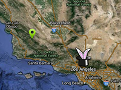

Example of a dynamic change texture of 2D marker.
Usage instructions:
Add this script to map GameObject.
Select marker texture.
Important: Make sure «Read / Write Enabled - ON» in Texture Importer.
Click "Change markers".
Add this script to map GameObject.
Select marker texture.
Important: Make sure «Read / Write Enabled - ON» in Texture Importer.
Click "Change markers".
ChangeMarkerTextureExample.cs
/* INFINITY CODE 2013-2016 */
/* http://www.infinity-code.com */
using UnityEngine;
namespace InfinityCode.OnlineMapsExamples
{
[AddComponentMenu("Infinity Code/Online Maps/Examples (API Usage)/ChangeMarkerTextureExample")]
public class ChangeMarkerTextureExample : MonoBehaviour
{
// Must enable "Read / Write enabled".
public Texture2D newMarkerTexture;
private void OnGUI()
{
// When you click on ...
if (GUI.Button(new Rect(10, 10, 100, 20), "Change markers"))
{
// ... all markers will change the texture.
foreach (OnlineMapsMarker marker in OnlineMaps.instance.markers)
{
marker.texture = newMarkerTexture;
marker.Init();
}
// Redraw map
OnlineMaps.instance.Redraw();
}
}
}
}